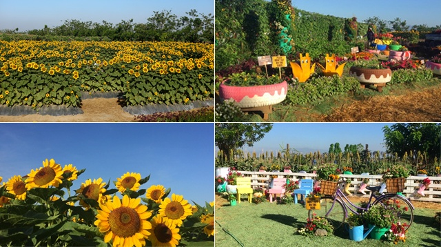

Tayug Sunflower Eco Park is an ecological and agritourism destination located in Barangay C. Lichauco, Tayug, Pangasinan, Philippines. Known for its vast sunflower fields and scenic countryside charm, it offers visitors a blend of photography spots, leisure areas, and eco-friendly attractions that promote sustainable tourism.
History and Development
Tayug Sunflower Eco Park began as a small agritourism initiative focused on showcasing sunflower cultivation and agricultural creativity. Early projects such as the Sunflower Maze and Sunflower Camp were developed through partnerships with local enterprises and botanical groups.
Over time, these efforts expanded into a full-scale eco park that blends farming, tourism, and education. As the park grew in popularity, it became a recognized destination in the region, especially during blooming seasons when thousands of sunflowers create a vivid landscape.
Today, it serves as both a tourist attraction and a symbol of innovation in local agriculture, hosting seasonal festivals and educational activities that highlight sustainable farming practices.
Features and Attractions


The park is best known for its expansive sunflower fields, where visitors can walk through maze-like paths surrounded by bright yellow blooms. With thousands of flowers planted in organized sections, the landscape becomes both visually striking and interactive.
Viewing decks placed around the park allow guests to take in panoramic views and capture photos from elevated perspectives. Beyond sunflowers, the park also features ornamental gardens, vegetable plots, picnic grounds, and shaded rest cottages.
Clean pathways and well-maintained facilities make the park accessible for visitors of all ages, while its pet-friendly environment adds to its welcoming and relaxed atmosphere.
Visiting Experience
The best time to visit Tayug Sunflower Eco Park is during the dry season, when the flowers are in full bloom and the weather is ideal for outdoor activities. Early mornings and late afternoons are especially popular because of cooler temperatures and softer natural light.
Travelers typically reach Tayug by bus or van from nearby cities, followed by a short tricycle ride to the park. Entrance fees are generally affordable, with discounts available for students, seniors, and children, making it accessible to families and group visitors.
Cultural and Environmental Significance
Tayug Sunflower Eco Park plays an important role in promoting community-based tourism and environmental awareness in Pangasinan. It provides livelihood opportunities for local farmers and workers while showing how agriculture can be integrated into tourism in a sustainable way.
Beyond its visual appeal, the park also serves as an educational space where visitors can learn about plant cultivation, biodiversity, and eco-friendly practices. As part of Pangasinan's growing ecotourism network, it highlights the value of preserving natural resources while supporting local communities.